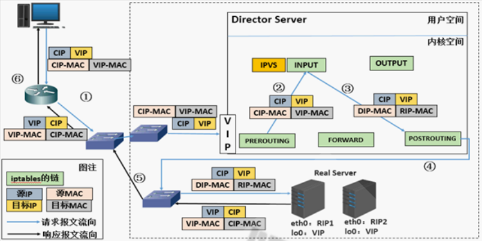

LVS原理和配置
本文主要总结了LVS几种工作模式原理和调度算法，LVS的配置示例。
Cluster：集群,为解决某个特定问题将多台计算机组合起来形成的单个系统。分为三种类型：LB，Load Balancing，负载均衡，多个主机组成，每个主机只承担一部分访问请求。HA：High Availiablity，高可用，避免单点失败。HPC：High-performance computing，高性能。
最常用的四层调度软件就是LVS，七层常用的为nginx和HAproxy
工作模式和调度算法
基本原理
LVS：Linux Virtual Server，是内核级功能，工作在INPUT链的位置，将发往INPUT的流量进行处理。根据请求报文的目标IP和目标协议及端口将其调度转发至某RS（real server），根据调度算法来挑选RS。
客户端访问流程：CIP <–> VIP （LVS） DIP <–> RIP
采用不同的工作模式，LVS对数据报文的修改不同。采用不同调度算法，分配主机的方式不同。
- lvs-nat：修改请求报文的目标IP,多目标IP的DNAT
- lvs-dr：操纵封装新的MAC地址
- lvs-tun：在原请求IP报文之外新加一个IP首部
- lvs-fullnat：修改请求报文的源和目标IP
相关术语
VS：Virtual Server，Director Server(DS), Dispatcher(调度器)，Load Balancer
RS：Real Server(lvs), upstream server(nginx), backend server(haproxy)
CIP：Client IP
VIP：Virtual serve IP VS的外网IP
DIP：Director IP VS的内网IP
RIP：Real server IP
NAT模式
lvs-nat：本质是多目标IP的DNAT，通过将请求报文中的目标地址和目标端口修改为某挑出的RS的RIP和PORT实现转发
需要注意：
- RIP和DIP应在同一个IP网络，且应使用私网地址；RS的网关要指向DIP
- 请求报文和响应报文都必须经VS修改，压力较大
- 支持端口映射，可修改请求报文的目标PORT
- VS必须是Linux系统，RS可以是任意OS系统
DR模式（最常用）
LVS-DR：Direct Routing，直接路由，LVS默认模式,应用最广泛,通过为请求报文重新封装一个MAC首部
进行转发，源MAC是DIP所在的接口的MAC，目标MAC是某挑选出的RS的RIP所在接口的MAC地址；源
IP/PORT，以及目标IP/PORT均保持不变。
需要注意：
Director和各RS都配置有VIP- RS的RIP可以使用私网地址，也可以是公网地址
- RS和Director要在同一个物理网络
- 请求报文要经由Director，但响应报文不经由Director，而由RS直接发往Client
- 不支持端口映射（端口不能修改）
- 无需开启 ip_forward

TUN（tunnel）模式
转发方式：不修改请求报文的IP首部（源IP为CIP，目标IP为VIP），而在原IP报文之外再封装一个IP首部
（源IP是DIP，目标IP是RIP），将报文发往挑选出的目标RS；RS直接响应给客户端（源IP是VIP，目标IP
是CIP）
需要注意：
- RIP和DIP可以不处于同一物理网络中，RS的网关一般不能指向DIP,且RIP可以和公网通信。也就是说集群节点可以跨互联网实现。DIP, VIP, RIP可以是公网地址
- RealServer的tun接口上需要配置VIP地址，以便接收director转发过来的数据包，以及作为响应的报文源IP
- Director转发给RealServer时需要借助隧道，隧道外层的IP头部的源IP是DIP，目标IP是RIP，而RealServer响应给客户端的IP头部是根据隧道内层的IP头分析得到的，源IP是VIP，目标IP是CIP
- 请求报文要经由Director，但响应不经由Director,响应由RealServer自己完成不支持端口映射
- RS的OS须支持隧道功能
静态调度算法
仅根据算法本身进行调度：
1、RR：roundrobin，轮询,较常用
2、WRR：Weighted RR，加权轮询,较常用
3、SH：Source Hashing，实现session sticky，源IP地址hash；将来自于同一个IP地址的请求始终发往
第一次挑中的RS，从而实现会话绑定
4、DH：Destination Hashing；目标地址哈希，第一次轮询调度至RS，后续将发往同一个目标地址的
请求始终转发至第一次挑中的RS，典型使用场景是正向代理缓存场景中的负载均衡,如: Web缓存
动态调度算法
主要根据每RS当前的负载状态及调度算法进行调度，不同的算法采用不同公式计算Overhead，value 较小的RS将被调度
1、LC：least connections 最少链接算法。适用于长连接应用。
公式为Overhead=activeconns（活动链接数）*256+inactiveconns（不活跃链接数）
2、WLC：Weighted LC，加权重的LC，默认调度方法,较常用。
公式为Overhead=(activeconns*256+inactiveconns)/weight
3、SED：Shortest Expection Delay，初始连接高权重优先,只检查活动连接,而不考虑非活动连接
公式为Overhead=(activeconns+1)*256/weight
LVS配置
管理软件和命令
使用程序包为ipvsadm
提供Unit File:为ipvsadm.service，主程序/usr/sbin/ipvsadm，规则保存工具/usr/sbin/ipvsadm-save，规则重载工具/usr/sbin/ipvsadm-restore
配置文件：/etc/sysconfig/ipvsadm-config
ipvs调度规则文件：/etc/sysconfig/ipvsadm
1 | |
DR模式配置案例
DR模型中各主机上均需要配置VIP，解决地址冲突的方式有三种：
(1) 在前端网关做静态绑定
(2) 在各RS使用arptables
(3) 在各RS修改内核参数，来限制arp响应和通告的级别
限制响应级别：arp_ignore
0：默认值，表示可使用本地任意接口上配置的任意地址进行响应
1：仅在请求的目标IP配置在本地主机的接收到请求报文的接口上时，才给予响应
限制通告级别：arp_announce
0：默认值，把本机所有接口的所有信息向每个接口的网络进行通告
1：尽量避免将接口信息向非直接连接网络进行通告
2：必须避免将接口信息向非本网络进行通告
1 | |
测试访问
1 | |
LVS缺陷
- Director不可用，整个系统将不可用
- 某RS不可用时，Director依然会调度请求至此RS
因此需要Keepalived等软件实现高可用性
本博客所有文章除特别声明外，均采用 CC BY-SA 4.0 协议 ，转载请注明出处！